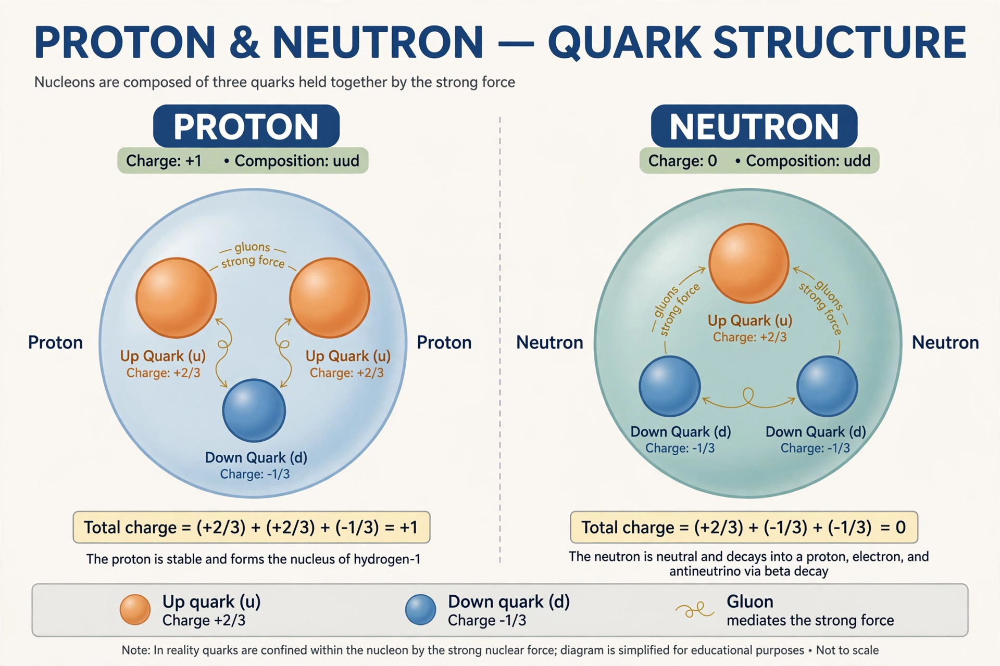

From Wikipedia, the free encyclopedia
| Quark model | |
|---|---|
 | |
| Field | Particle physics |
| Proposed by | Murray Gell-Mann and George Zweig (1964) |
| Components | Up, down, strange (later charm, bottom, top) |
The quark model is a classification scheme for hadrons — protons, neutrons, mesons and their many short-lived relatives — in terms of their valence quarks. Proposed independently in 1964 by Murray Gell-Mann and George Zweig, it explained the "particle zoo" of the 1950s and early 1960s: baryons are made of three quarks and mesons of a quark and an antiquark. Gell-Mann took the word "quark" from a line in James Joyce's Finnegans Wake: "Three quarks for Muster Mark."
Building on the Eightfold Way classification, the model assigned fractional electric charges (+2/3 and −1/3) to its three original quarks — up, down and strange. The scheme predicted a new particle, the Ω−, which was found at Brookhaven in 1964 with exactly the predicted properties. Deep inelastic scattering experiments at SLAC in the late 1960s revealed point-like constituents inside the proton, and the model grew to six flavours with the discoveries of charm (1974), bottom (1977) and top (1995).
An apparent paradox — baryons such as the Δ++ seeming to contain three identical quarks in the same state — was resolved by adding a new quantum number, colour charge, developed into the theory of quantum chromodynamics (QCD). Quarks are never observed in isolation (confinement); the quark model remains the standard bookkeeping for hadron spectra, now extended by exotic states such as tetraquarks and pentaquarks confirmed at the Large Hadron Collider.